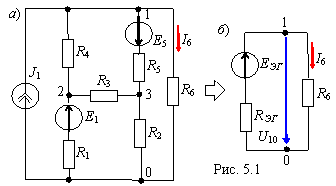
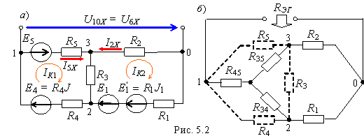

ОСНОВНЫЕ ПОЛОЖЕНИЯ
Метод эквивалентного генератора основан на теореме Тевенина об эквивалентном генераторе (активном двухполюснике), которая гласит: любую сложную линейную электрическую цепь с произвольным числом источников тока и источников напряжения (рис. 5.1, а) можно заменить простой схемой (рис. 5.1, б),
состоящей из эквивалентного генератора (ЭГ) с ЭДС EЭГ и последовательно соединенного с ним внутреннего сопротивления RЭГ; при этом обе схемы оказываются идентичными по отношению к выходным зажимам 1 и 0, к которым подключена нагрузка R6. Тогда ток I6 и напряжение U10 на зажимах 1 и 0 нагрузки(см. рис. 5.1, б) равны:
I6 = EЭГ/(RЭГ + R6);
U10 = U6 = R6I6 = EЭГ - RЭГI6. (5.1)
Второе выражение соответствует уравнению внешней характеристики источника напряжения (ИН), параметры которого (EЭГ и RЭГ) можно определить из двух режимов работы ИН:
- режима холостого хода (I6 = 0, шестая ветвь разомкнута)
EЭГ = U10X, (5.2)
т. е. ЭДС эквивалентного генератора равна напряжению U10X холостого хода (ХХ) на зажимах нагрузки;
- режима короткого замыкания (КЗ) (U10 = 0)
RЭГ = EЭГ/I6K, (5.3)
где I6K - ток короткого замыкания (шестой) ветви с нагрузкой.
Таким образом, для определения тока, например, в шестой ветви по первой формуле (5.1), достаточно провести два опыта: опыт ХХ, измерив U6Х = EЭГ, и опыт КЗ, измерив ток I6K, и вычислить внутреннее сопротивление ЭГ: RЭГ = EЭГ/I6K.
При теоретических расчетах параметров ЭГ (EЭГ и RЭГ) выбирают метод расчёта с минимально необходимым числом уравнений для нахождения напряжения U10X = EЭГ. Так, для схемы рис. 5.1, в которой источник тока J заменён двумя источниками напряжения с параметрами E4 = R4J и E'1 = R1J (рис. 5.2, а), при разомкнутой шестой ветви напряжение
U10X = -E5 + R5I5X - R2I2X.

Токи I5X и I2X определим методом контурных токов (см. рис. 5.2, а):
I5X = IK1; I2X = -IK2;
(R3 + R4 + R5) IK1 - R3IK2 = E4 + E5; 12IK1 - 3IK2 = 28;
-R3IK1 + (R1 + R2 + R3)IK2 = E1 + E1'; -3IK1 + 6IK2 = 12
(принято: R1 = 1 Ом; R2 = 2 Ом; R3 = 3 Ом;
R4
= 4 Ом; R5 = 5 Ом; R6 = 6 Ом;
J = 2 A; E1 = 10
В; E5 = 20 В);
Тогда I5X = 3,24 А; I2 = -3,62 А; U10X = -20 + 5∙3,24 + 2∙3,62 = 3,44 В.
Для определения сопротивления RЭГ вычертим схему без источников энергии (рис. 5.2, б) и определим входное сопротивление по отношению к зажимам 1 и 0, предварительно заменив треугольник сопротивлений R5 - R4 - R3 эквивалентной звездой R34 - R45 - R35, сопротивления лучей которой равны: